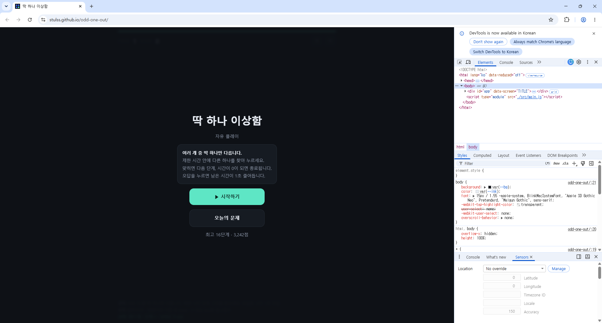
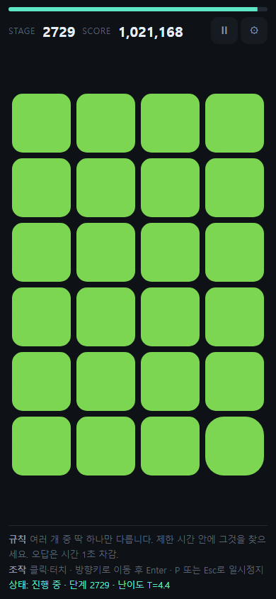
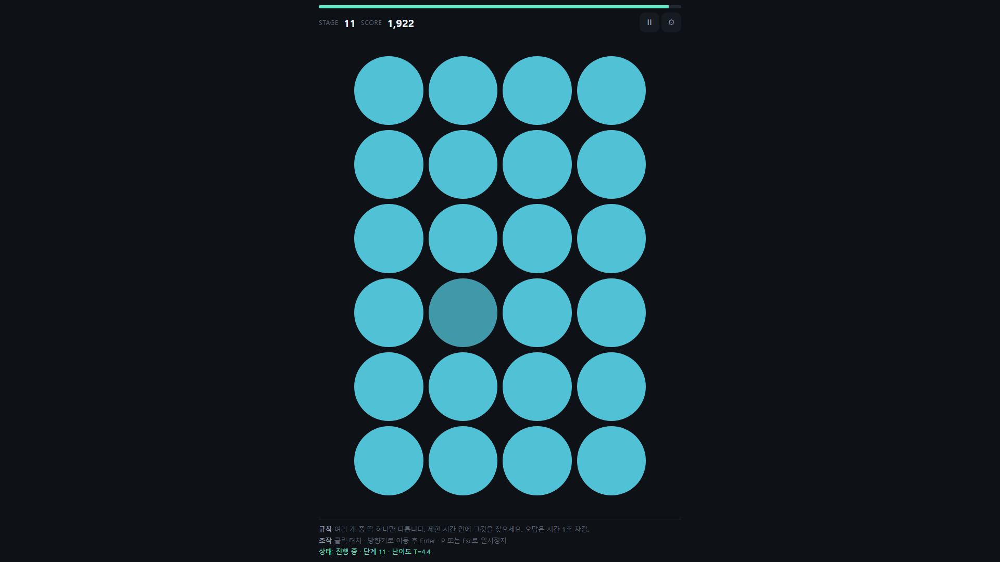
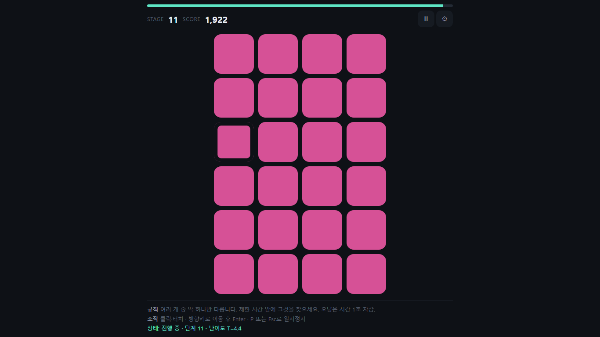
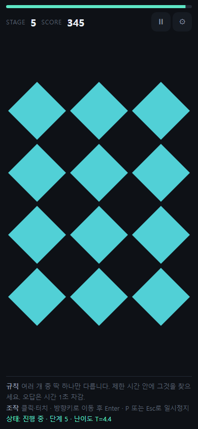
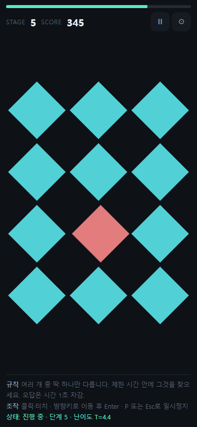
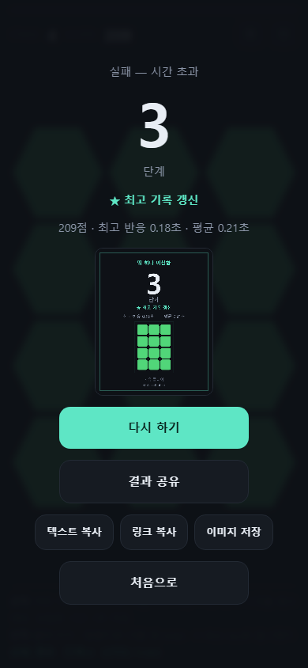
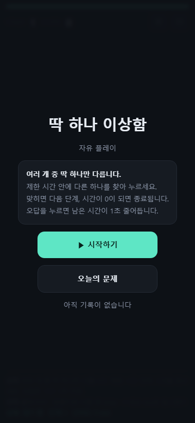

프레임워크, 래스터 이미지, 외부 오디오 라이브러리 없이 26.3KB 초경량으로 구현한 브라우저 관찰력 미니게임 「오리지널 감별국」입니다. 시드 난수 기반 기기 간 동일 문제 동기화, 1px·3° 단위의 수학적 지각 임계값 제어, 1개 rAF 루프 무결점 렌더링을 직접 설계하고 검증했습니다.
"이미지 파일은 축소 시 노이즈로 불공정한 실패를 만듭니다."
10가지 차이 축을 CSS/SVG 수치로 제어하고, 인간의 감각 한계(지각 임계값)를 넘지 않도록 수학적으로 설계한 로직을 직접 조작해 보세요.
딱 하나 다른 타일을 찾아 클릭해 보세요!
"렌더 루프가 필요 없는 게임에 무거운 게임 엔진을 쓰면 비용만 남고 이득은 0이다."
불필요한 추상화를 걷어내고 브라우저 원초적 성능을 100% 이끌어냈습니다.
래스터 이미지(.png/.jpg)는 뷰포트 축소 시 서브픽셀 앤티에일리어싱 노이즈가 발생해 의도치 않은 '가짜 단서'나 '불공정한 실패'를 유발합니다. 모든 오브젝트를 SVG 좌표와 CSS 수치로 그려 1px·3° 단위의 완벽한 수학적 공정성을 달성했습니다. 오디오 파일 없이 Web Audio API 신디사이저로 실시간 주파수를 변조해 콤보 음계, 긴장감 BGM, 카운트다운 초침을 합성합니다.
xmur3 해시와 mulberry32 32비트 시드 난수 알고리즘을 결합했습니다. DB나 API 서버 없이 URL 쿼리의 6자리 시드만으로 수천 개의 기기에서 100% 동일한 스테이지를 결정론적으로 재현합니다. 날짜는 KST로 고정해 전 세계 어디서 접속해도 동일한 '오늘의 문제'가 열립니다.
게임 코어(규칙, 타이머, 스테이지 생성, 통계)는 React를 전혀 모르는 순수 TypeScript(`engine/`)로 격리했습니다. 매 프레임(16ms) 갱신되는 프로그레스 바와 파티클은 React Virtual DOM을 거치지 않고 직접 DOM 요소를 조작해 불필요한 리렌더링을 0건으로 통제했습니다.
외부 3D 모델 파일(glTF) 다운로드 없이 기본 프리미티브(Sphere, Capsule, Cone)를 절차적으로 조립했습니다. 모바일 브라우저의 WebGL 컨텍스트 고갈 한계를 극복하기 위해 단 1개의 WebGLRenderer를 모든 캐릭터 인스턴스가 공유하며, 저사양 기기에서는 2D SVG로 자동 폴백(Graceful Degradation)됩니다.
"항상 통과하는 검사는 검사가 아니라 장식이다."
실제 개발 과정에서 맞닥뜨린 난관들을 상황(Situation), 목표(Task), 행동(Action), 결과(Result)와 배운 점으로 투명하게 공개합니다.
두 해상도(390px, 1280px)에서 가로 넘침이 없는지 자동 검사를 실행했고 지속적으로 "넘침 없음(PASS)"을 통과함. 그러나 실제 스크린샷 육안 확인 시 우측 게임판이 잘려 보이는 모순 발생.
검사 코드의 무결성을 검증하고, 스크린샷과 검사 결과가 불일치하는 근본 원인을 파악해 실패할 수 있는 진짜 검증 로직으로 재설계.
기존 코드 `scrollWidth > innerWidth` 분석: CSS에 `html,body{overflow-x:hidden}`이 있어 넘친 내용이 잘려나가 항상 false 반환 확인.
실제 요소 좌표 `board.getBoundingClientRect().right > innerWidth`로 전면 교체.
390×844 전 구간 11스테이지 재측정 결과 게임판이 16~374px(뷰포트 390px) 내에 존재함을 수학적으로 확정. 결함의 주범이 코드가 아닌 캡처 도구의 뷰포트 왜곡임을 밝혀내는 결정적 계기가 됨.
"같은 링크는 같은 문제를 본다"가 프로젝트 핵심인데, 화면 너비에 맞춰 칸 수를 동적으로 계산(1280px=48칸, 375px=24칸)하여 기기마다 정답 위치와 스테이지가 달라지는 참사 발생.
모바일 최소 터치 타깃 44px 조작성을 지키면서도, 기기 해상도와 무관하게 모든 디바이스에서 동일한 정답과 칸 배열을 보장.
그리드 크기 결정권을 뷰포트에서 '스테이지 번호'로 이관. 360px 최소 화면에서도 44px가 보장되는 4×6=24칸을 엄격한 상한선으로 고정하고, 난이도는 칸 수가 아닌 '차이의 미묘함(delta)'으로만 상승하도록 분리.
동일 시드 25스테이지 전수 일치 100% 달성. 코드 단 3줄 수정으로 아키텍처 결함 해결. 프로토타입 단계 조기 발견으로 재설계 비용 수십 시간 절감.
헤드리스 브라우저로 12장의 증거 스크린샷을 찍었고 콘솔에 12줄 모두 OK가 떴으나, 파일 크기가 완전히 동일해 열어보니 전부 "ERR_CONNECTION_REFUSED" 오류 페이지였음.
샌드박스 환경 네트워크 제약을 해결하고, 스크린샷 자동화 도구가 에러 페이지를 정상 캡처로 오판하지 않도록 방어 체계 구축.
단순 파일 크기(>2KB) 판정 규칙 폐기. `file://` 프로토콜 기반 무서버 렌더링으로 전환 후, 스크립트에 이미지 바이너리 해시(SHA-256) 중복 검사 로직을 추가하여 동일 이미지가 연속되면 에러 처리.
총 48장 캡처 중 고유 이미지 48종, 중복 0건을 자동 증명. 이후 캡처 과정에서 발생하는 렌더링 누락을 원천 감지.
수학적으로 부드러운 곡선을 위해 smoothstep(t²(3-2t))을 채택했으나, 1~10단계 진행 동안 회전 차이가 20.0°에서 15.0°로 25%만 감소하여 초중반 난이도가 지나치게 밋밋함.
사용자가 실제로 머무는 핵심 구간(8~15단계)에서 단계마다 난이도 상승을 명확히 체감할 수 있는 현실적 곡선으로 재설계.
제한 시간이 짧아 대부분 8~15단계에서 게임이 끝난다는 로그 분석. 양 끝이 완만한 smoothstep 대신 구간 선형 보간으로 전격 교체.
초반 10판의 난이도 변화량이 5.0°에서 6.1°로 정밀 증가하며 판마다 균일하고 팽팽한 긴장감 형성.
난이도 T 슬라이더를 50%나 조정(3.6→5.4)했음에도 10판 자동 시뮬레이션 결과 도달 단계 중앙값이 21.5에서 20.0으로 겨우 1.5단계만 차이남.
난이도 파라미터가 유의미하게 게임 플레이 결과를 변별할 수 있도록 지배 변수(Dominant Factor)를 찾아 연동.
로그 분석 결과 시간이 부족해서 죽는 시점은 30단계 이후이고, 실제 종료 원인은 '차이(delta)를 눈으로 못 찾는 것'이었음. T를 제한시간 감쇠가 아닌 차이 곡선 공식 `dEase = ease × T / 4.4`에 직접 연결.
종료 구간(20~25단계)의 차이 여유도 변동폭이 기존 0%p에서 최대 25%p로 확대되어 실제 손잡이로서의 기능 확보.
모바일 해상도(360×640) 캡처 시 게임판이 잘려 보였으나, 실제 브라우저 실측 좌표는 넘치지 않는 모순이 지속됨.
뷰포트를 인위적으로 크롭하는 결함 도구를 배제하고, 정확한 픽셀 비율(DPR)을 에뮬레이션할 수 있는 도구 확보.
헤드리스 크롬의 `--window-size` 매개변수가 실제 뷰포트가 아닌 가상 윈도우를 자르는 버그 확인. 브라우저 컨텍스트 뷰포트 제어가 확실한 Playwright로 촬영 파이프라인 전면 교체.
360×640 해상도에서 4×4 격자 및 UI가 1픽셀 오차 없이 완벽하게 렌더링됨을 증명. 3상태 × 4해상도 = 12장 자동 촬영 파이프라인 완성.
버튼에 사용한 이모지(🔁, 📤)가 컬러 이모지 폰트가 없는 Linux/Headless PDF 렌더링 환경에서 네모 상자(□)로 깨져 출력됨.
시스템 폰트 환경에 종속되지 않고 어떤 뷰어/인쇄 장치에서도 100% 동일하게 의도를 전달하는 UI 구축.
"내 화면에선 예쁘다"는 주관적 판단 배제. 환경 의존성이 높은 이모지를 제거하고 명확한 텍스트('다시 하기', '결과 공유') 및 인라인 SVG 아이콘으로 전면 교체.
모든 PDF 문서 및 스크린샷에서 글리프 깨짐 0건 달성. 발표자료 슬라이드 변환 시 체크마크 글리프 변조 문제도 사전 예방.
버그를 고친 후 "고쳤다"는 확신만으로 step1, step3만 재실행하고 step2 검증을 누락하여 과거 오류 화면이 그대로 방치된 사실을 뒤늦게 인지.
개발자의 기억력이나 자의적 판단에 의존하지 않는 전수 검증 프로세스 및 체크리스트 자동화.
코드 내 버튼 목록과 테스트 대상을 1:1 매핑한 15개 인터랙션 전수 체크리스트 스크립트 작성 및 CI 파이프라인에 배치.
누락 위험 0%. 모든 단계와 인터랙션이 전수 검증 완료 도장을 받아야만 배포되도록 품질 기준 확립.
"포트폴리오에 기여도 100%라고 적는 것보다, 무엇을 스스로 판단했는지를 적는 편이 신뢰를 얻습니다."
AI의 제안을 무비판적으로 수용하지 않고, 아키텍처 원칙에 따라 반려하고 결정한 실제 기록입니다.
• 8종 SVG 도형 좌표 및 CSS 테마 변수 매핑 코드 작성
• Playwright 기반 3상태 × 4해상도 스크린샷 캡처 스크립트 작성
• xmur3 + mulberry32 난수 알고리즘 보일러플레이트 구현
• Vitest 순수 로직 단위 테스트 스위트 작성
• "3초 내 첫 진입"을 위한 게임 엔진(Phaser/Pixi) 전면 배제 결정
• 오답 시 '즉사'가 아닌 '시간 -1초' 패널티 설계로 플레이 스트레스 완화
• 모바일 44px 터치 보장과 시드 동기화를 위한 4×6 그리드 상한선 확정
• React와 게임 엔진의 완전한 분리 원칙 고수
• Cloudflare Pages 제안 반려: AI가 Wrangler CLI 및 Workers 설정을 제안했으나, 정적 에셋 서빙에 불필요한 러닝커브와 복잡성을 유발한다고 판단하여 단순하고 확실한 Vercel / GitHub Pages로 직관적 반려
• 가짜 초록불 검증 코드 기각: AI가 작성한 `scrollWidth` 검사의 치명적 맹점을 찾아내고 좌표 기반 검사로 전면 재작성 지시
실제 배포 환경에서 10분간 연속 자동 진행을 수행하고 크롬 DevTools로 실측한 결과입니다.
| 엔진 / 기술 스택 | 번들 전송 크기 | 첫 플레이 진입 시간 | 메모리 점유율 | 평가 및 채택 여부 |
|---|---|---|---|---|
| Vanilla + DOM / Vite (본 프로젝트) | 26.3 KB (Gzip) | 약 1.5초 | 극소 (~15 MB) | 최종 채택 (목표 100% 충족) |
| PixiJS | 약 140 KB | 약 2.2초 | 중간 (~40 MB) | 기각 (단순 격자에 과도함) |
| Phaser 3 | 약 450 KB | 약 3.5초 | 높음 (~80 MB) | 기각 (3초 진입 목표 위반) |
| Unity WebGL | 15 MB+ | 약 15초+ | 매우 높음 (~250 MB) | 기각 (웹 이탈률 치명적) |
TypeError, Unhandled Promise, 렌더링 에러 전무
프레임 드랍 0% 유지
1 Loop rAF와 React 비연동 직접 DOM 갱신의 힘
localStorage 손상 방어 매트릭스
null, 빈값, 파싱 오류, 타입 누락 시 기본값 100% 복구
문서와 코드 뒤에 존재하는 실제 측정 데이터와 실행 화면들을 확인하세요.








48페이지 전수 보고서 및 PowerPoint COM 변환 발표자료 PDF를 직접 열람할 수 있습니다.